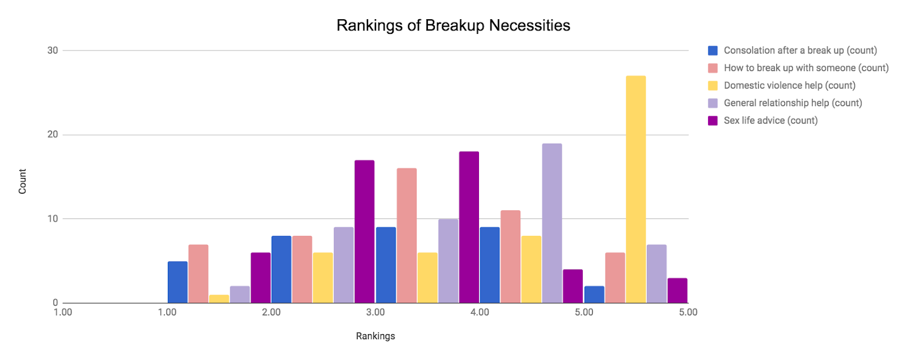

DESIGN MANIFESTO
Introduction
In the world of computer science, one does not begin an application nor a website nor any software without an idea and a plan. Creation demands purpose. The process by which one designs and refines their ideas offers direction to the builder. Over the course of several weeks, Human-Computer Interaction invited students to discover this system of production and to assemble projects reflective of their ability in evaluation and application of the users' desires. As a student within this course, I engaged my knowledge and artistic ability in each project. Encouraging creative contemplation, the challenge of the process enhanced my skill set and confidence in the world of design.
Brainstorming
The start of the design process requires an engaging idea. To procure a successful product, one must be prepared to ideate ridiculous possibilities before a viable option reveals itself; and sometimes the final thought itself is ridiculous. While brainstorming with my Design for Tension group, we conceptualized the notion individuals require relationship advice. The nature of the idea includes the potential for overwhelming emotion, yet out group introduced the concept of a 'Babushka' chatbot to diffuse the tension. Though we only began with a loosely defined design for a relationship assistance chatbot, we built upon that idea with good brainstorming technique and constructed a depthful persona that resonated in response and character.
Continuing the Design for Tension, I devoted myself to the construction of the 'General Relationship Advice' option for the conversation flow. Though I worked alone for this portion of the project, I spoke aloud in order to feign the same excitement the group had displayed earlier when discussing 'Babushka.' To construct the conversation flow, I required problems to conceptualize a response from 'Babushka.' In Figure 2 and Figure 3, my thoughts wildly soar and converge in Figure 4 to later be applied to the conversation flow.
Brainstorming sustains vital importance in the design process, and a bad brainstorming session greatly hinders possibilities. Often individuals are uncomfortable or uncertain with their group and ideas. By not persisting and allowing negativity to seep into the early stages of creation, a group suffers greatly as the stages progress. While positive energy and excitement persist in a group, the ideas are boundless and the product will radiate success as it forges onto the following phases.
Research
With an engaging idea come preconceptions and existent knowledge. The responsibility of the team, research requires clarity and truth. For both Design for Tension and Design for Wellbeing, I conducted the investigation of our questions. To provide the ideal product for the user, in both groups I created surveys and reviewed the information received. During the former project, we were examining the applicability of our 'Babushka' idea and the needs of the user following a breakup. While examining and formatting the data required a large sum of time, the final products provided valuable information for us to instill in our product. Figure 5 offered insight into the relevance of the 'Babushka' character, Figure 6 and 7 ranked categories of sought-after relationship advice, and Figure 8 displayed prevalent coping strategies within our demographic.

The latter project, Design for Wellbeing proposed the opportunity to research the relationship between emotions and beverages. Figure 10 questioned the relevance of our idea to the interests of the demographic, while Figure 9 compared the choice of drink against mood.
Market Research provides an intuitive awareness of the users and their needs. Without data to support the production of an application, the designer cannot discern whether the public will value their creation. While not every project requires extensive data collection but rather includes some online research, such as Design for Others, most ventures should engage in some process of understanding the user. If we had not registered the importance of advice categories in Design for Tension, we would have specified the application to the best of our insufficient knowledge and failed to provide a decent product. In Design for Wellbeing if we had not questioned the masses in their comparisons of beverages and emotions, our group would have created an unreliable monstrosity with specific tastes accompanying moods unlike the connections the user may experience. Research provides a generalization applicable to prototypes unobtainable through just our small group alone.
Prototypes and Sketches
With a reliable conception of the user, the designer begins their idea's manifestation. This phase will bring to life an idea with rough shapes and estranged lines. Design for Others entailed the creation of several prototypes in lieu of an actual webpage. From scratch I constructed two pages and drew a few drawings included in one of them which are represented in Figures 11 through 15 below.
Visualizations of abstract concepts assist in the development of a final product. Though not an actual drawing, the flowchart in Figure 16 creates a conversation that may be implemented in the final product.
Images summarize ideas and provide a clean concept of what the user wants and what the designer wants to offer. To project my findings in Design for Wellbeing, I created a small table to represent the drinks associated with each emotion for later application. Scattered ideas in Figure 18 and 19 are refined in Figure 20.
Similarly, I created a flowchart to encapsulate the unorganized sketches of Design for Another World.
As the designer applies their acquired knowledge surrounding an idea, they can generalize and create a rough outline of their product. Though occasionally their outline becomes spoiled due to lack of expertise or loss of time, a sketch or prototype provides a helpful hand in its construction. Though the sketches of Design for Another World, Figure 18 and 19, do not present the final product because the limitations of our technical skills prevented us from forming the original idea, they still pose useful ideas that have generated different options. A sketch or prototype do not need to be perfect, but they need to exist for any level of reference. Even this website was born from sketches, Figure 21 and Figure 22. They provide the opportunity for evaluation before commitment demands action.
Feedback
Final Product
Conclusion